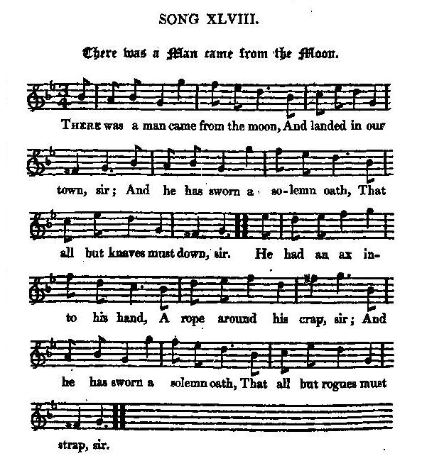

There was a man came from the moon
Un homme venait de la lune
George I's Whig ministry in 1714
Les ministres Whigs de Georges I en 1714
Tune - Melodie
"There was a man came from the moon"
from Hogg's "Jacobite Reliques" part I, N°48
Sequenced by Christian Souchon


|
THERE WAS A MAN CAME FROM THE MOON
1. There was a man came from the moon, [1] And landed in our town, sir; And he has sworn a solemn oath, That all but knaves must down, sir. He had an ax into his hand, A rope around his crap, sir; And he has sworn a solemn oath, That all but rogues must strap sir. 2. And first he brought a dozen'd drone, [2] And rais'd him up on high, sir, Who knew not what was right or wrong, And neither buff nor stye, sir. And then he took a maudlin wight, A horse-couper by name, sir, [3] And after him two shallow knights, [4] To help to play the game, sir; 3. A duke that daddled long in blood, [5] A dog without the nose, sir, And four braw Norland pipers' sons, [6] From traitor race that rose, sir. And when this dog's game will be done, [7] There is no one can tell, sir; Or whether this man came from the moon, Or if he came from hell, sir. Source: "The Jacobite Relics of Scotland, being the Songs, Airs and Legends of the Adherents to the House of Stuart" collected by James Hogg, published in Edinburgh by William Blackwood in 1819. |
UN HOMME VENAIT DE LA LUNE
1. Un homme venant de la lune [1] En notre ville atterrit. Jurant de n'y souffrir aucune Âme moins vile que lui. Il venait armé d'une hache, Avec une corde au poing: "A ce lien", jurait-t-il, "j'attache Chacun, hormis les vilains!" 2. Une abeille mâle assoupie [2] Il a distingué d'abord. Le bien, le mal, peu lui soucie Et aux autres, le remord! Puis sur un pleurnichard se porte Son choix: sur un maquignon, [3] Rejoint bientôt par deux cloportes [4] Pour mieux disposer ses pions. 3. Un duc - tiens! du sang sur ses chausses! [5] Un dogue au nez aplati. Quatre fils de sonneurs d'Ecosse, [6] De traîtres à leur pays. Si l'occasion est opportune, Le chien cessera de jouer. [7] Cet homme vient-il de la lune Ou de l'enfer? Nul ne sait. (Trad. Christian Souchon(c)2009) |
|
[1] "Is as hard to be understood as any song I have ever met with. Mr [Walter] Scott, after considering it thoroughly, gave it up as a song made about some
burgh politics
; but as I got it among a number of genuine old Jacobite manuscripts, I remained unalterably of opinion that it related to some national occurrence offensive to the Jacobites, and am now convinced, howsoever ill I can make it out, that it alludes to
the establishment of the Whig ministry
by George I. in 1714.
I conceive, then, that "the man that came from the moon" may be considered as an allegory, a personification of a general overruling providence in the affairs of government. [2] "And first he brought a dozen'd drone , And rais'd him up on high, sir, Who knew not what was right or wrong, And neither buff nor sty, sir." This " dozen'd drone" I take to be George I. who was not over accurate in making his estimates of the British character. [3] "And then he took a maudlin wight, A horse-cowper by name, sir." By this, though hinged on a vile pun, I take to be meant the Lord Cowper , keeper of the great seal. [4] "And after him two shallow knights , To help to play the game, sir." These might be the earl of Wharton and Lord Townshend ; the one made keeper of the privy-seal, and the other secretary of state. [5] "A duke that daddled long in blood, A dog without the nose, sir." These are doubtless the duke of Marlborough , appointed at this time colonel of the first regiment of foot and master of the horse, as well as head of the cabinet-council, and Mr Pulteney , who was made secretary of war - but whether the latter had a long or short nose, or no nose at all, I have been unable to learn. [6] "And four braw Norland pipers' sons , From traitor race that rose, sir." These are likely the dukes of Argyle, Roxburgh, Montrose, and Mr Stanhope, all of whom got offices at that time, and made use of them to thwart the designs of the Tories to the utmost of their power: but that all their fathers should have been pipers is rather an extraordinary coincidence. [7] "And when this dog's game will be done, There is no one can tell, sir; ..., Or whether this man came from the moon, Or if he came from hell, sir." In this verse the rascally Jacobite doubts that the special providence which brought about the deposing of the rightful heir, and raising the Whigs over their heads, came from heaven at all, and slyly suggests that it came from the other place. This, I think, is a solution of the song throughout: if it is not the true one, there is a strong similarity. But I have always found, that the more closely these party songs are searched into, the more plainly do the dark allusions contained in them appear, and the more pointed at individuals of the other party." James Hogg dans "Jacobite Relics" |
[1] "Ce chant est l'un des plus énigmatiques que j'aie jamais rencontré. [Walter] Scott à qui je l'avais soumis, suggéra, après mûre réflexion, qu'il traitait de
politique locale
. Mais, comme il figurait parmi d'authentiques chants Jacobites anciens, je restais convaincu qu'il visait quelque événement d'importance nationale, contraire aux vues des Jacobites. J'estime désormais, quelque imparfaite que soit ma démonstration, que le chant fait allusion à la
constitution du premier cabinet ministériel Whig
par Georges I. en 1714. J'imagine alors que l'
"homme qui venait de la lune"
est une allégorie, une personnification de la providence qui préside aux grandes lignes des affaires de l'état.
[2] "Une abeille mâle assoupie Il a distingué d'abord. Le bien, le mal, peu lui soucie Et aux autres, le remord!" Ce "bourdon assoupi" me semble n'être autre que Georges I. qui ne chercha jamais à pénétrer trop avant dans les arcanes de la psyché britannique. [3] "Puis sur un pleurnichard se porte Son choix: sur un maquignon ," vise, par le biais d'un mauvais calembour ("horse coper"=maquignon), Lord Cowper , garde du grand sceau royal. [4] "Rejoint bientôt par deux cloportes Pour mieux disposer ses pions." Il pourrait s'agir du comte de Wharton et de Lord Townshend : l'un devint garde du seau-privé et l'autre, secrétaire d'état. [5] "Un duc - tiens! du sang sur ses chausses! [5] Un dogue au nez aplati." Il ne peut s'agir que du duc de Marlborough nommé à cette époque colonel du premier régiment d'infanterie et maître de la cavalerie ainsi que chef du cabinet du conseil et M. Pulteney qui devint secrétaire d'état à la guerre. ( J'ignore si ce dernier avait le nez long ou court, ou pas de nez du tout). [6] " Quatre fils de sonneurs d'Ecosse , De traîtres à leur pays." Il pourrait s'agir des ducs d'Argyll, Roxburgh, Montrose et M. Stanhope, qui occupèrent tous un office à cette époque et qui s'opposèrent aux desseins des Tories de toutes leurs forces. Que leurs pères aient tous été des sonneurs de cornemuse est une étonnante coïncidence. [7] "Si l'occasion est opportune, Le chien cessera de jouer. Cet homme vient-il de la lune Ou de l'enfer? Nul ne sait. Dans ce couplet ce fripon de Jacobite conteste que ce soit la Providence divine qui ait résolu la mise à l'écart de l'héritier légal du trône et ait placé les Whigs devant eux. Il suggère au contraire que ces initiatives pourraient avoir été prises en un autre lieu. Voilà, je pense, une interprétation qui explique ce chant de bout en bout. Si ce n'est pas la bonne, elle y ressemble fort. J'ai toujours constaté que plus on creuse ces chants partisans, plus le sens des allusions obscures qu'ils contiennent apparaît clairement et plus acérées deviennent les pointes visant les adversaires, dans l'autre parti." James Hogg dans "Jacobite Relics" |